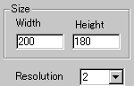
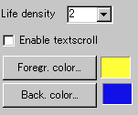

|
This applets is an implementation of the Jhon Conway's
Game of Life, a cellular automaton, which simulates birth, death,
etc. of cells strictly following the set of rules.
The rules:
(1) The game is played on an infinite quadratic
grid.
(2) Each grid cell is either alive or dead.
(3) The new state of each cells is determined by its old state and
the sum of the alive cells among its surrounding 8 cells.
(4) If a cell has 0, 1, 4, 5, 6, 7, or 8 alive neighbour cells,
it will die.
(5) If a cell has 2 or 3 alive neighbours, it will survive to the
next generation.
(6) If a dead cell has exactly 3 alive neighbours, the dead cell
turns to be alive.
The game shows various interesting equilibrium states
depending on the initial patterns of cells.
[For more technical
information about the available parameters, click here.]
Most parameters are self-explanatory
and you can always see brief description of each parameter by moving
the mouse pointer over the wizard.
 |
Here, you set the applet "Width"
and "Height", and then select "Resolution"
of the applet from the pull-down menu.
|
| "Resolution"
parameter decides how larger the internal image is expanded
when it is displayed. For example, the value 3 gives three times
as big image size as the actual image has. So, it works as a
zooming parameter. |
 |
There is only one parameter which
actually changes life particles effect; that is, "Life
density" parameter. This determines the initial number
of life particles from density 1 to density 9. |
|
Then you decide if textscroll function is
enabled by checking "Enable textscroll" box.
Finally, select the gradient colour painted
over the whole life particles at "First colour"
and "Last colour".
|
Proceed to the textscroll
menu if you have checked the textscroll box; otherwise go to
the expert menu.
|